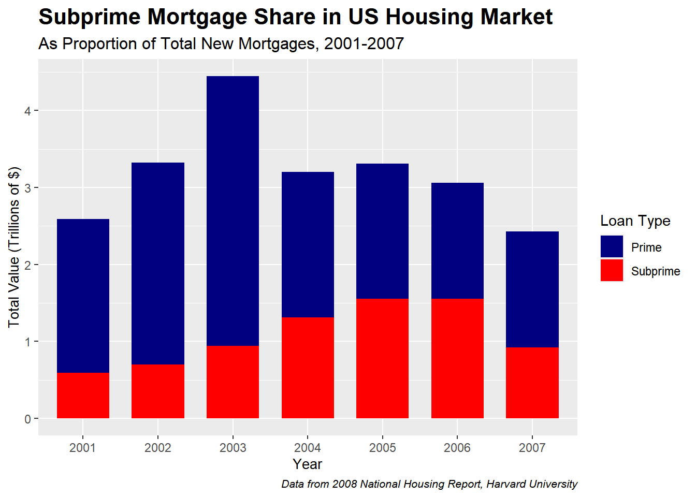
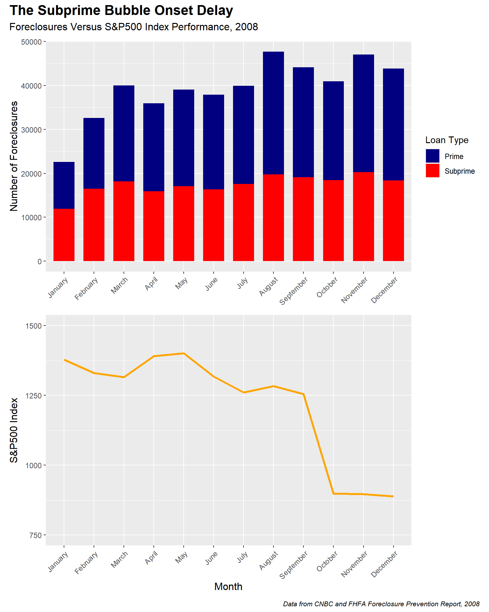
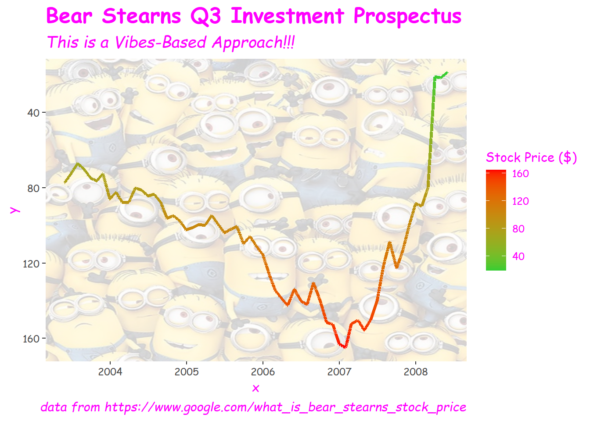

Show code
#Load Libraries
library(tidyverse)
library(here)
library(ggplot2)
library(ggforce)
library(ggimage)
library(patchwork)
library(lubridate)
library(showtext)How a Bunch of Crooks Crashed the World Economy
#Load Libraries
library(tidyverse)
library(here)
library(ggplot2)
library(ggforce)
library(ggimage)
library(patchwork)
library(lubridate)
library(showtext)I was a high school sophomore when the 2008 Great Recession occurred. While old enough to metabolize the big headlines, I was still too young to fully understand what had occurred, and what the ramifications would be. My general understanding was that a lot of grown-ups had lost a lot of money, and that it was better to be in school at the moment.
Learning about the recession as an adult has been revealing. Wall-Streeters may dress up in suits and cloak their day-to-day work in layers of incomprehensible jargon, but the absolute bacchanalia of the 2000s subprime craze had traders behaving like a group of sharks converging on a chum bucket. Just like with a shark feeding, there was an overarching sense this bounty would be fleeting. The central commodity being traded were mortgages for people who couldn’t afford homes, which were nonetheless packaged and exchanged as if they could. If that seems unsound, that’s because it is. The industry created millions of crappy home loans and stuffed them into all sorts of financial commodities to be bought and sold. At some point in 2008 everyone collectively realized these loans weren’t worth the paper they were printed on, and over a trillion dollars fell out of the economy overnight.
#pull in the data
mortgagedata <- read.csv(here("GoodPlotBadPlot","Data","Subprime_Mortgage_Data.csv"))
head(mortgagedata) #data check
#pivot to long data for easier rendering in ggplot
mortgagedata_long <- mortgagedata |>
pivot_longer(
cols = c(New_Subprime_Mortgages,New_Prime_Mortgages),
names_to = "Loan_Type",
values_to = "Total"
) |>
mutate(Year = as.factor(Year))#turn year into a factor
head(mortgagedata_long) #data check
##ggplot stacked bar chart
ggplot(mortgagedata_long,aes(x=Year,y=Total,fill=Loan_Type)) +
geom_col(position="stack",width=0.7)+ #stacked bar chart to show breakdown
scale_fill_manual(values=c("New_Prime_Mortgages"="navy", #blue is peaceful
"New_Subprime_Mortgages"="red"), #color it red so people know it's the bad thing
labels = c("Prime",
"Subprime"))+
labs(title="Subprime Mortgage Share in US Housing Market",
subtitle = "As Proportion of Total New Mortgages, 2001-2007",
x = "Year",
y = "Total Value (Trillions of $)",
fill = "Loan Type",
caption = "Data from 2008 National Housing Report, Harvard University")+
theme(plot.title = element_text(size = 16,face = "bold"),
plot.subtitle = element_text(size = 12),
axis.title = element_text(size=10),
plot.caption = element_text(size = 8,face = "italic"))
As you can see in the chart above, subprime loans, which made up less than a fifth of all new mortgages in 2001, comprised close to half of new mortgages in 2005. The spike in 2003 is due to the Federal Reserve dropping interest rates to near historic levels, which created a rush of new home buyers and catalyzed the subprime market by making it easier than ever to obtain cheap credit. By 2007, subprime loans had begun to default enough to contract the overall U.S. housing market, despite prime mortgages continuing to be generated at a similar amount.
#pull in datasets
SP500_2008 <- read.csv(here("GoodPlotBadPlot","Data","SP500_Data_2007_2009_Long.csv"))|>
filter(Year==2008,)|> #select only 2008
#order months sequentially and make values numeric
mutate(Month=factor(Month, levels=month.name),
Index.Value=as.numeric(Index.Value))
head(SP500_2008) #S&P500 Dataset
Foreclosures_2008 <- read.csv(here("GoodPlotBadPlot","Data","2008_Foreclosure_Data.csv"))|>
mutate(Month = factor(Month, levels = month.name)) #order months sequentially
head(Foreclosures_2008) #Foreclosures dataset
#ggplot bar chart plus line chart, linked with patchwork
#bar chart
A1 <- ggplot(Foreclosures_2008,
aes(x=Month,
y=Number,
fill=Loan.Type))+
geom_col(position="stack",width=0.7,)+ #stack again seems like best visual
scale_fill_manual(values=c("Prime"="navy",
"Subprime"="red"))+ #red still equals bad
theme(axis.title=element_text(size=12),
axis.title.x=element_blank(), #block this element from showing
axis.text.x = element_text(angle = 45, hjust = 1))+
labs(y="Number of Foreclosures",
fill="Loan Type")
#line chart
A2 <- ggplot(SP500_2008,
aes(x=Month,
y=Index.Value,
group=1))+
geom_line(color="orange",linewidth=1.2)+
#customize y-scale
scale_y_continuous(limits = c(750,1500),breaks=(seq(750,1500,by=250)))+
theme(axis.text.x = element_text(angle = 45, hjust = 1))+
labs(y="S&P500 Index")+
theme(axis.title=element_text(size=12))
Patchwork_Plot <- A1 / A2 #stitch the plots together
#adding labels
Patchwork_Plot+
plot_annotation(title="The Subprime Bubble Onset Delay",
subtitle="Foreclosures Versus S&P500 Index Performance, 2008",
caption="Data from CNBC and FHFA Foreclosure Prevention Report, 2008",
theme=theme(plot.title = element_text(size = 16,face = "bold"),
plot.subtitle = element_text(size = 12),
plot.caption = element_text(size = 8,face = "italic")))
This chart shows how a marked rise in foreclosures during the early part of 2008 signaled the impending housing bubble, as greater numbers of homeowners could no longer afford their mortgage payments. Tellingly, a greater and greater share of prime mortgages defaulted and entered foreclosure over the year. However, it took until October 2008 for the stock market at large to recognize the crisis and for investor confidence to completely crater.
There was, however, one firm that served as the canary in the coal mine…
On March 14th, 2008, Wall Street giant Bear Stearns lost over half of its stock value in a single day, falling from above $61/share to a little over $30/share. Though this was the single most effective day they had torching their value, the firm had been wobbling for some time before the bottom fell out. Bear was highly active in the subprime housing market and in its profligate greed, it got out over its skis and became massively over-leveraged. When the housing market began to slide in 2007, Bear encountered severe solvency problems and was one of the first firms to go. When they crashed–Hindenburg-like–onto the floor of the stock exchange, most other traders reacted with a mix of bemusement and schadenfreude. What they failed to realize was that they were up to their necks in the same junk that cratered Bear Stearns. Months later, the slide would envelop them too.
Because the demise of Bear Stearns was so rapid and so infamous, I thought it would be a great opportunity to create a wildly misleading plot, with both hideous visual elements and intentionally misleading interpretation cues. Enjoy!
#bring in the data
Bear_Stearns_Stock <- read.csv(here("GoodPlotBadPlot","Data","Bear_Stearns_Stock.csv"))|>
mutate(Date=ymd(Date))|>
arrange(Date)#use lubridate to convert to dates
head(Bear_Stearns_Stock)
#prep my font
windowsFonts(`Comic Sans MS` = windowsFont("Comic Sans MS")) #aka the BEST font for being taken seriously professionally
#make an unspeakable plot
Bear_Plot <- ggplot(Bear_Stearns_Stock,
aes(x=Date,
y=End_Of_Day_Stock_Price,
group=1,
color=End_Of_Day_Stock_Price))+
#geom link2 from ggforce package to create line gradient
geom_link2(linewidth=1.4)+
#your losses are now gains!!!
scale_y_reverse()+
#red is good and green is bad! Do not think critically, peons, simply INVEST!
scale_color_gradient(
name="Stock Price ($)",
low="limegreen",
high="red")+
labs(title = "Bear Stearns Q3 Investment Prospectus",
subtitle = "This is a Vibes-Based Approach!!!",
caption = "data from https://www.google.com/what_is_bear_stearns_stock_price")+
theme(panel.background = element_rect(fill="transparent",color=NA),
plot.background = element_rect(fill="transparent",color=NA),
legend.background = element_rect(fill="transparent"),
text = element_text(family="Comic Sans MS",color="magenta"),
plot.title = element_text(size = 18,face = "bold"),
plot.subtitle = element_text(size = 14,face = "italic"),
plot.caption = element_text(size = 11,face = "italic"),
)
#Minions are the pinnacle of professionalism
Minions_Plot <- ggbackground(Bear_Plot,"Minions.jpg",alpha=0.2)
Minions_Plot